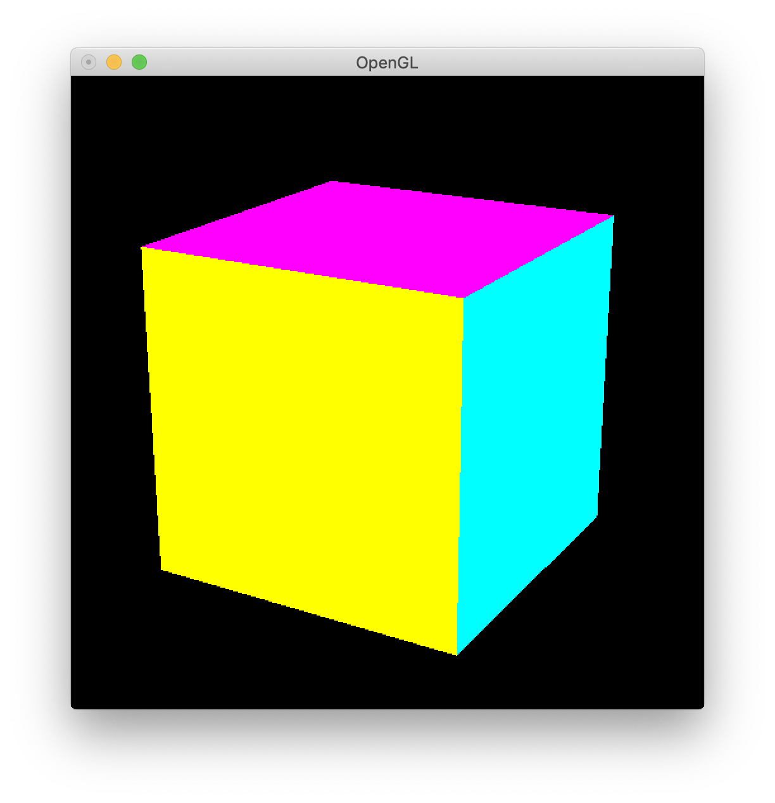

第8回
| 氏名 | 林橘平
|
|---|
| クラス | 総合情報学コース3年
|
|---|
| 学生証番号 | 08-192025
|
|---|
□課題8.1- 8.3節 例1:PyOpenGLによる２次元グラフィクスのプログラム
○プログラムリスト
例題のため略
○実行コマンド
(base) MBP:Chap08 hayashikippei$ python lines.py
○実行結果
○考察
まずwindow()関数で描画領域を確保し、init()では背景色と描画色を設定している。reshape()
ではウインドウのサイズ変更に伴う描画座標系の設定を行っている。display()で直線の描画に関する
コードが書かれている。線分の11個の終点の座標を用意し、glBegin(GL_LINES)では、forループで
始点(0,0)と終点を結ぶ直線を描画している。
□課題8.2 - 10.3節 例1:透視投影による立方体の描画
○プログラムリスト
例題のため略
○実行コマンド
(base) MBP:Chap08 hayashikippei$ python cubePosition.py
○実行結果
○考察
argsInit()ではシェル引数やキーボード入力に応じてglobal変数eyeX, eyeY, eyeZに値を
代入している。display()ではまず、頂点の座標列vertices, 各面の頂点番号列faces, 各面の色を
指定するcolorsを定めている。そしてforループで、GL_QUADSを用いて
各面の座標値facesとカラーコードcolorsの値を用いて6つの四角形を描画している。
□課題8.3 - 10.3節 例2:多角形としての立方体の描画
○プログラムリスト
例題のため略
○実行コマンド
(base) MBP:Chap08 hayashikippei$ python cubePolygon.py
eyeX eyeY eyeZ or [] -> 4 3 7
○実行結果

○考察
例１と同じく立方体の描画であるが、こちらでは多角形として立方体を描画している。
cubePositionをインポートし、重複しているinit()やargsInit()などの記述は省いている。
異なるのはdisplay()であり、GL_QUADSではなくGL_POLYGONを用いている。
GL_QUADSでは、頂点４つを1組とした四角形の集合を描くため、描画の終了であるglEnd()は
全てのループが終わった後に書いていたが、GL_POLYGONでは与えられた座標で一つの多角形を書くため、
一つのループごとにglEnd()する必要がある。display()を変更したため、display()
を呼び出すloop()も新たに記述する必要がある。描かれた立方体は例１、２共に正しく描けている。
□課題8.4 - 10.3節 章末課題：視点位置
○プログラムリスト
課題8.2のコードと同じため略
○実行コマンド
(base) MBP:Chap08 hayashikippei$ python cubePosition.py
○実行結果


 与えた引数は左上から右下の順に、
(0 0 7), (-4 3 7),(-4 -3 7),(1 1 7),(-4 -3 -7),(4 0 7)
与えた引数は左上から右下の順に、
(0 0 7), (-4 3 7),(-4 -3 7),(1 1 7),(-4 -3 -7),(4 0 7)
○考察
１枚目は立方体を正面から見た図であり、正面の黄色い面のみが見えている。２枚目は、例１,2とは異なり
立方体を左ではなく右側から見ている。３枚目はそれをさらに上からではなく下から見た図。
４枚目は１枚目同様正面に近いが、x,y成分が少しずれているため画像も少し傾いている。
５枚目は例1とは真逆の方向から見ている。つまり、例１,2で見ている立方体の裏側である。
他の画像と比べて全体的に暗くなっている。これはcolorsで色を指定する時に、xyz座標が
負だと色を暗くしているからである。６枚目はxz平面上の点から立方体を見ているため、
上下のマゼンタの面が全く見えていない。
□課題8.5 - 10.3節 章末課題：立体データの意味
○プログラムリスト
課題8.2のコードのfacesの値を変えただけのため略。facesの値の変更点は実行結果に書いてある。
○実行コマンド
(base) MBP:Chap08 hayashikippei$ python cubePosition.py
○実行結果
faces[0] = (5,1,2,6) 引数は左が(4,3,7)、右が(7,2,2)
 faces[0] = (5,6,2,1) 引数は左が(4,3,7)、右が(7,2,2)
faces[0] = (1,6,5,2) 引数は左が(4,3,7)、右が(7,2,2)
faces[0] = (5,6,2,1) 引数は左が(4,3,7)、右が(7,2,2)
faces[0] = (1,6,5,2) 引数は左が(4,3,7)、右が(7,2,2)

 faces[0] = (5,6,1,2) 引数は左が(4,3,7)、右が(7,2,2)
faces[1] = (2,3,6,7) 引数は左が(4,3,7)、右が(2,7,2)
faces[0] = (5,6,1,2) 引数は左が(4,3,7)、右が(7,2,2)
faces[1] = (2,3,6,7) 引数は左が(4,3,7)、右が(2,7,2)
○考察
faces[0] = (5,1,2,6) の時、これは
四角形の頂点を一周する順番なので正しく正方形が描かれる。faces[0] = (5,6,2,1)の時。これも頂点を
一周する順番になっているのだが、なぜか何も描かれていない。faces[0] = (5,1,2,6),(1,2,6,5)も同様に
頂点を順番に一周しており、こちらは正しく正方形が描けている。この２つとの違いとして頂点を
一周する向きの違いが考えられる。faces[0] = (5,1,2,6),(1,2,6,5)の場合は頂点を反時計周りに一周しているが、
faces[0] = (5,6,2,1)の場合は時計回りである。GL_QUADSの仕様として反時計回りに四角形の頂点の座標を与えないと
上手く四角形が描画されないようになっており、それが原因で今回は四角形が描画されていないのではと考えた。
faces[0] = (1,6,5,2),(5,6,1,2)の時。この場合どちらも途中で四角形の対角線上にある頂点に移動する順番に
なっている。与えられた頂点の順番通りに直線を引き、直線で囲まれて面と成っている部分に色がついて
描画されていることが実行結果の画像でわかる。
実行結果最後はfaces[1] = (2,3,6,7)とした。facesの他の面でも、頂点の順番を変えると上で述べた同様の
現象が起きることが確認できる。
□課題8.6 - 10.3節 章末課題：その他の立体データ
○プログラムリスト
課題8.import sys # sysモジュールのimport
import math
from OpenGL.GL import * # GLモジュールのimport
from OpenGL.GLU import * # GLUモジュールのimport
from OpenGL.GLUT import * # GLUTモジュールのimport
eyeX, eyeY, eyeZ = (4, 3, 7) # OpenGLウィンドウの幅と高さ
def window(width, height): # ウィンドウ作成
'''
width - OpenGLウィンドウの幅
height - OpenGLウィンドウの高さ
GLUTを初期化して，OpenGLウィンドウを作成する
'''
glutInit(sys.argv) # GLUTの初期化
glutInitDisplayMode(GLUT_RGB | GLUT_SINGLE) # 表示モードの指定
glutInitWindowSize(width, height) # ウィンドウサイズの指定
glutInitWindowPosition(0, 0) # ウィンドウ位置の指定
glutCreateWindow('OpenGL') # ウィンドウの作成
def init(): # OpenGLの初期化
'''
OpenGLを初期化する
'''
glClearColor(0, 0, 0, 1) # 背景色の設定 (白)
glEnable(GL_DEPTH_TEST)
glEnable(GL_CULL_FACE)
def argsInit():
global eyeX, eyeY, eyeZ
if len(sys.argv) > 3:
args = sys.argv[1:]
else:
args = input('eyeX eyeY eyeZ or [] -> ').split(' ')
if len(args) >= 3:
eyeX, eyeY, eyeZ = (float(args[0]),float(args[1]),float(args[2]))
def reshape(width, height): # ウィンドウのサイズ変更に伴うコールバック関数
'''
width - 変更後のOpenGLウィンドウの幅
height - 変更後のOpenGLウィンドウの高さ
ウィンドウサイズ変更に伴う処理を行う
'''
global eyeX, eyeY, eyeZ
fieldOfView ,near ,far = (25, 1, 20)
aspect = width / height
glViewport(0, 0, width, height) # ビューポートの設定
glMatrixMode(GL_PROJECTION) # 投影変換行列の設定開始
glLoadIdentity() # 恒等行列での初期化
gluPerspective(fieldOfView, aspect, near ,far)
glMatrixMode(GL_MODELVIEW) # モデル変換行列の設定開始
glLoadIdentity() # 恒等行列での初期化
gluLookAt(eyeX, eyeY, eyeZ,0,0,0,0,1,0)
def display(): # 描画要求に伴うコールバック関数
'''
描画要求に伴う処理を行う (放射状の線を描画する)
'''
vertices = ((0, 2*math.sqrt(6)/3, -math.sqrt(3)/3),(-1, 0, 0),(1, 0, 0),(0,0,-math.sqrt(3)))
faces = ((0,1,2),(0,2,3),(0,3,1),
(1,2,3))
colors = ((0,1,1),(1,0,1),(1,1,0),
(1,1,1))
glClear(GL_COLOR_BUFFER_BIT | GL_DEPTH_BUFFER_BIT) # 背景の消去
glBegin(GL_TRIANGLES) # 線分描画の開始
for i in range(len(faces)): # 線分描画の反復 (終点の個数分)
glColor3dv(colors[i])
for j in range(len(faces[i])):
glVertex3dv(vertices[faces[i][j]]) # 線分の始点
glEnd() # 線分描画の終了
glFlush() # 描画命令の送信
def loop(): # コールバック関数の設定とループ起動
'''
reshape と displayコールバック関数を設定し，ループを起動する
'''
glutReshapeFunc(reshape) # reshapeコールバック関数の登録
glutDisplayFunc(display) # displayコールバック関数の登録
glutMainLoop() # GLUTのメインループ起動
def main(): # main関数
W, H = (500, 500)
window(W, H) # ウィンドウの作成
init() # OpenGLの初期化
argsInit()
loop() # コールバック関数の設定とループ起動
if __name__ == '__main__': # 起動の確認 (コマンドラインからの起動)
main() # main関数の呼出
○実行コマンド
(base) MBP:Chap08 hayashikippei$ python3 pyramidPosition.py
eyeX eyeY eyeZ or [] -> 5 3 5
○実行結果
引数は左が(5,3,5)、右が(-5,3,5)
上のコードでfaces[0] = (0,2,1)とした。引数は左が(5,3,5)、右が(-5,3,5)
○考察
立方体の描画と同様に、正四面体の４つの座標を定め、facesで面の頂点番号を指定し、GL_TRIANGLES
で三角形を４つ描くことで正四面体を描画した。底面をxz平面にし、平方根を用いて頂点の座標を指定した。
GL_TRIANGLESは、三角形の描画に用いるライブラリで、GL_QUADSと同じく３つの頂点を1組とした
三角形の集合を与えることで三角形を描画できる。
実行結果２番目はfaces[0] = (0,2,1)とした時であるが、この時にfaces[0]に該当する三角形が描画されていない。
これもGL_QUADSと同様に反時計回りの順番で頂点を指定しないと描画できない仕様になっているためだと考えられる。
□課題や授業に関して
○レポート作成に要した時間
3時間
○特に苦労した点
正四面体の描画
○授業についての感想や希望
なし